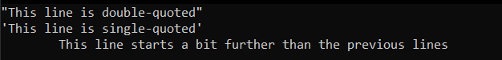

So far, we used data types to store conditions(bool), numbers (int, float, ...) and make calculations with them.
However, C++ allows us to store letters and text, as well
The char data type has been designed to hold a single character.
Remember that everything in the computer's memory is just binary bits. So, how are these characters stored?
The truth is that characters are encoded with the numbers 0-127.
The mapping between a character and its number is defined in the ASCII table
ASCII codes 0-31 are not printable and most of them are obsolete
ASCII codes 32-127 are the printable characters. For example, the letter A in ASCII is 65
Char literals are always placed inside single quotes
char capitalA = 'A'; // The capital letter A
char capitalA2 = 65; // The same thing (65 gets converted to char, which is 65)
cout << capitalA << " " << capitalA2 << endl; // Prints A A
cin's << operator also supports reading char variables
What you saw in the previous example is called casting
It is a way of changing a variable's type to a new one
Type conversions in C++ can happen implicitly and explicitly.
int a = 5;
float b = a; // Does not crash - a gets implicitly converted to float
float c = a / 10; // Does integer division
cout << c << endl; // Prints 0
c = (float)a / 10; // explicit conversion - does floating point division
cout << c << endl; // Prints 0.5
There are 5 types of casting in C++
And we will stay away from them for now :)
C++ defines char to always be 1 byte in size. It may be signed and unsigned.
Holding ASCII characters means we are interested in values 0-127, which means that both will suffice
There are some characters that have a special meaning. These are called escape sequences
They start with a \ character, and then following a letter or a number.
We already used the \n escape sequence, which represents a new line.
Other notable escape sequences are
The following code snippet
cout << "\"This line is double-quoted\"\n";
cout << "\'This line is single-quoted\'\n";
cout << "\tThis line starts a bit further than the previous lines\n";
Prints
In order to work with text in programming, we use strings
A string is just a sequence of characters
String literals are enclosed within double quotes and we have been using them quite a lot so far
cout << "I am a string" << endl;
In C++, strings are implemented as a character array, whose last symbol is the null terminator ('\0'), which is the character with ASCII code 0
Examples
Memory layout
In the previous example we used the strlen function from the cstring library. The library contains other useful functions for strings, but it is better to try and implement them on your own.
All rules for arrays apply for strings as well. This means that
There are some exceptions, of course
char str[] = "string";
str[1] = 'p';
cout << str; // Prints spring
The << operator of cout prints characters from a string until it encounters the null terminator
If you overwrite the null terminator in a string, cout will just keep printing everything in adjacent memory slots until it happens to hit a null byte.
We can use the << operator if we know how long it will be
char phoneNumber[16]; // 15 symbols for phone number and 1 for null terminator
cout << "Enter your phone number: ";
cin >> phoneNumber;
cout << "You entered: " << phoneNumber;
Don't do this: if the user enters more than 15 characters, the program could crash
A more secure option - cin.getline()
char phoneNumber[16]; // 15 symbols for phone number and 1 for null terminator
cout << "Enter your phone number: ";
cin.getline(phoneNumber, 16);
cout << "You entered: " << phoneNumber;
getline() will read up to 15 characters into phoneNumber and append a null terminator. Any excess characters will be discarded.
cin << reads characters until a delimiter (space, tab, new line)
cin.getline(str,n) reads until a new line, but not more than n characters
That was it :)